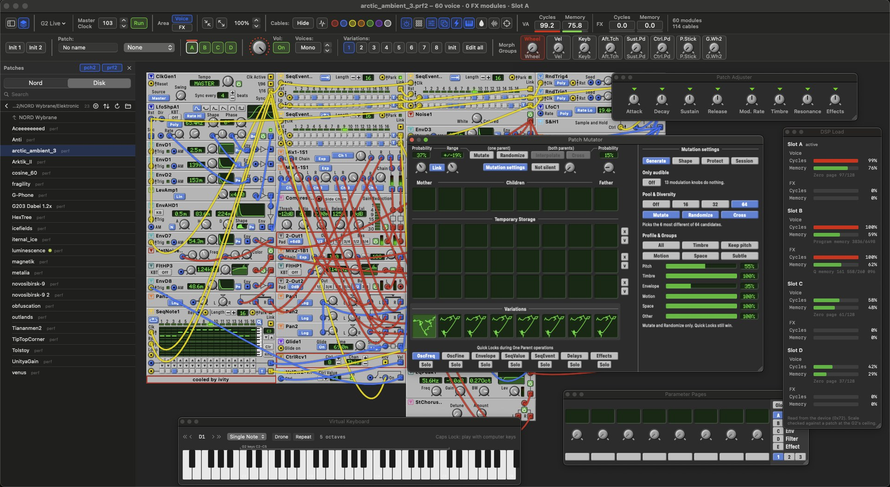

A modern editor for the Nord Modular G2
Free and open source, native on Apple silicon Macs. The familiar G2 layout and workflow, live with your synth over USB. Every feature stays free for everyone.

A performance with the Patch Mutator, DSP Load, Parameter Pages and the on-screen keyboard open.
This is an early beta
Cube G2 Editor 0.1.1 is an early public beta. Please try everything you do with your G2: open and save patches, edit live, play performances, use variations, morphs and banks. Tell us what doesn't work, what looks wrong or what feels awkward. Every report helps, even a small one.
In the app, Settings ▸ Feedback shows what to include in a report and how to save a USB log.
Everything you patch on the G2, on a modern Mac
Patches look and behave the way G2 players know them, so there is nothing to relearn.
Live over USB
Edit the patch on your G2 as it plays: modules, cables, knobs, names and colors.
The layout you know
Module panels, cable colors and menus follow the original G2 editor.
Performances and four slots
Open .pch2 patches and .prf2 performances, with variations, morphs and the global knobs.
Patch Mutator
Breed new sounds from two parents, randomize with care and keep the good ones.
Spectrum and X-Y
See what your G2 plays, straight from the inputs of your audio interface.
Module library
Browse every module with a picture of its panel and drop it right into the patch.
Bank backup
Download all the patches and performances in your G2's memory to your Mac.
Play from the Mac
An on-screen keyboard plays the selected slot, even with your computer keys.
Up and running in a minute
- Download the .dmg, open it and drag Cube G2 Editor to Applications.
- Open the app. macOS says it can't check the app for malware. Click Done.
- Open System Settings ▸ Privacy & Security, scroll down and click Open Anyway.
You only need to do this once for every new version. The editor tells you when a new one is out.
Why? Cube G2 Editor is an independent app that isn't registered with Apple, so macOS can't verify it automatically. This is common for free, independent software.
Requirements
- macOS 15 Sequoia or later
- A Mac with Apple silicon (M1 or newer)
- Nord Modular G2 with OS 1.62, connected over USB
The G2X and G2 Engine have not been tested yet. Intel Macs are not supported.
Made with G2 players
Tell us what works, what breaks and what you miss. The beta gets better with every report.
Discord
Bug reports, ideas and beta talk. Post problems in #bug-reports and wishes in #feedback.
Join the DiscordGitHub
The full source code under the GPL. Open an issue, follow new releases or build the editor yourself.
Open on GitHubSupport the project
Cube G2 Editor is free and every feature stays free. If it makes your G2 sessions better, you can buy me a coffee.
Support on Ko-fi